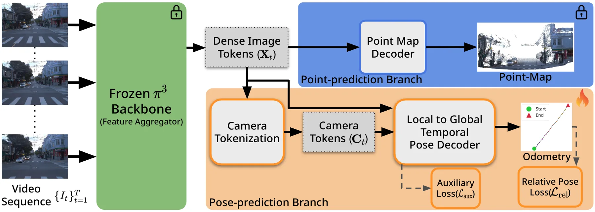
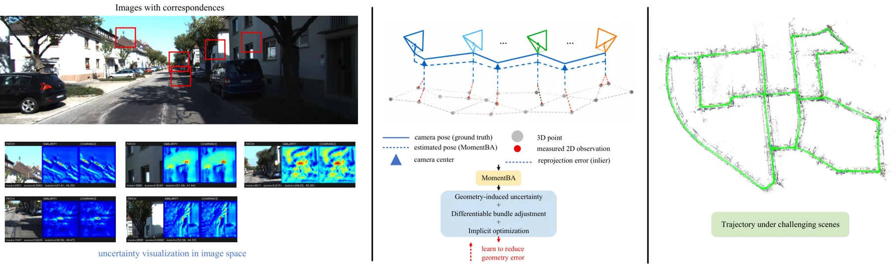
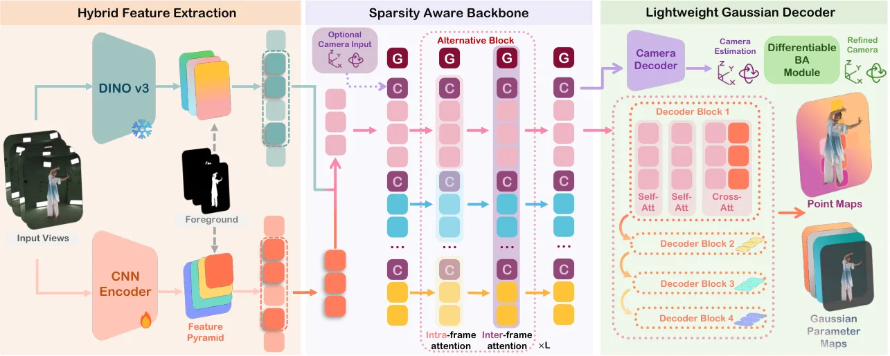
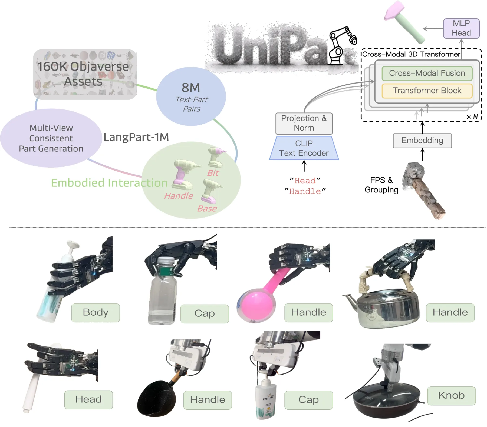
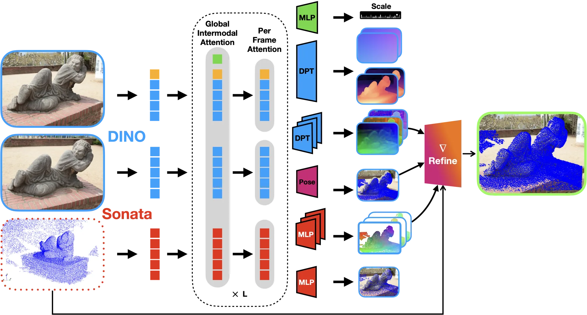
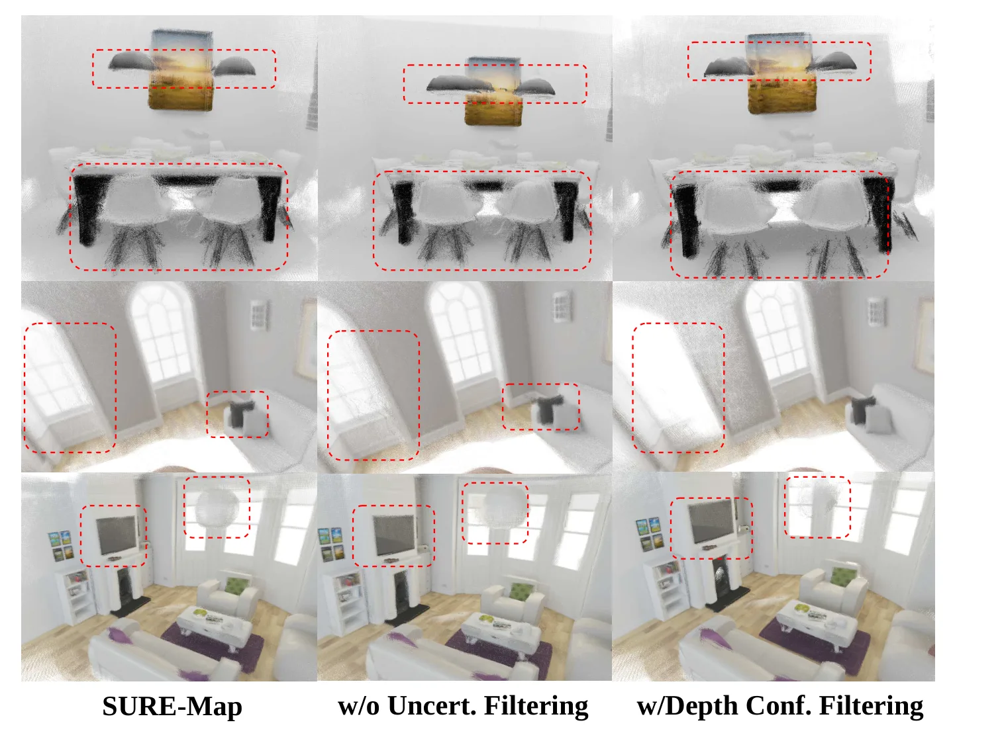
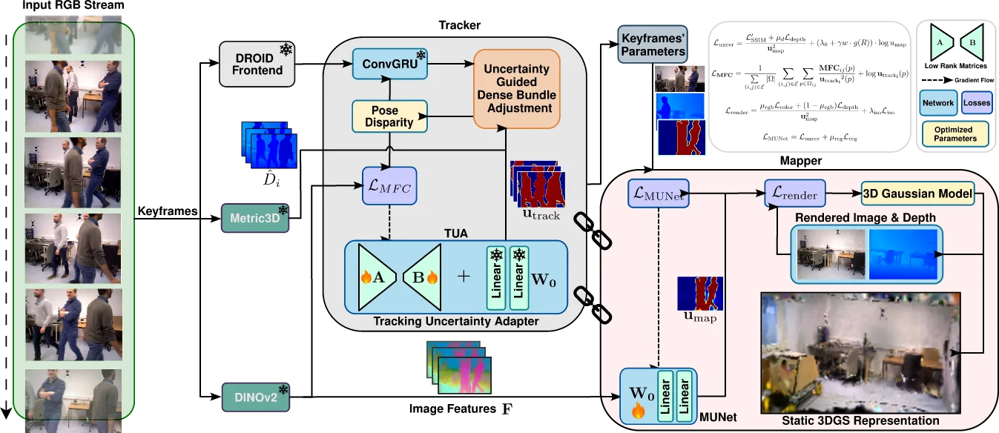
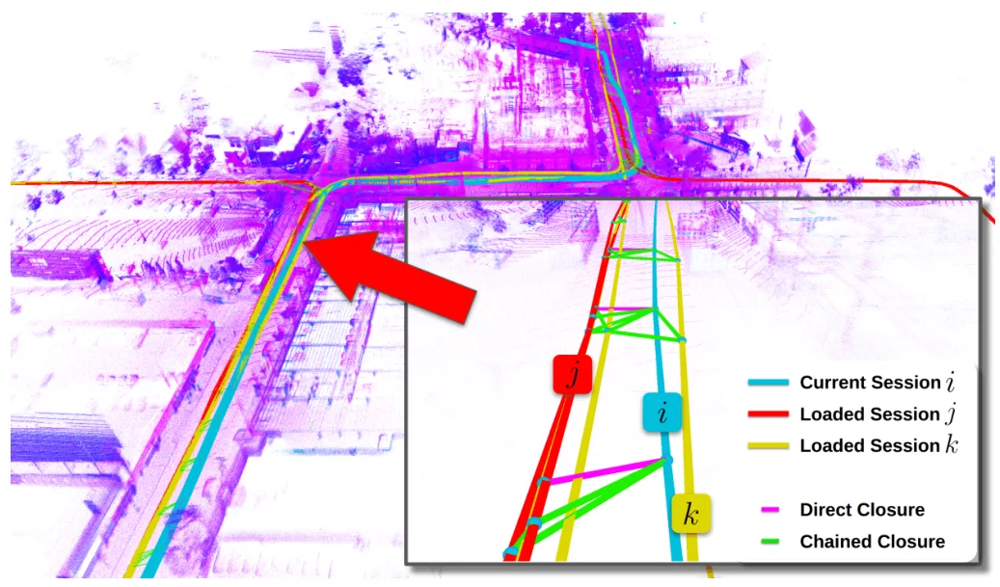

新论文 · 日期 2026-09-12 · score 18 · S层 · Geometry Foundation Models / 3D Foundation Models · cs.CV
内容级别：完整单篇海报
作者：Meng-Li Shih, Shih-Yang Su, Yuliang Zou, Hao Xiang
评分 18/10
前馈几何长时程 VO层级时序轨迹稳定性
一句话工作总结：FFVO 将联合重建网络改造成专门的相机位姿解码器，目标是降低长视频中的抖动与漂移。原文在 Waymo Open Dataset、KITTI 和内部大规模基准上报告优于现有前馈方法；FFVO-Long 还以 120 帧片段加轨迹级后优化处理公里级序列。
Stable and reliable 4D spatial understanding is fundamental for autonomous driving systems. While feedforward reconstruction networks can estimate camera motion and 3D structure in one pass, pose estimation ov…
Stable and reliable 4D spatial understanding is fundamental for autonomous driving systems. While feedforward reconstruction networks can estimate camera motion and 3D structure in one pass, pose estimation ov…

新论文 · 日期 2026-09-12 · score 16 · S层 · Learning + Geometric Optimization SLAM/VIO · cs.CV
内容级别：完整单篇海报
作者：Yuqing Wang, Xiaoji Niu, Yan Wang, Hailiang Tang
评分 16/10
各向异性不确定性可微 BA匹配响应可靠状态估计
一句话工作总结：MomentBA 把局部匹配响应的二阶空间矩直接转成每个对应点的各向异性协方差，并用于 differentiable bundle adjustment 的信息矩阵加权。它避免额外 covariance prediction network，针对边缘、重复纹理和运动模糊造成的方向性不确定性。
Most existing visual odometry (VO) systems treat feature correspondences as deterministic measurements or assign uniform uncertainty, ignoring the inherent localization ambiguity of different observations. How…
Most existing visual odometry (VO) systems treat feature correspondences as deterministic measurements or assign uniform uncertainty, ignoring the inherent localization ambiguity of different observations. How…

新论文 · 日期 2026-09-14 · score 15 · S层 · Geometry Foundation Models / 3D Foundation Models · cs.CV
内容级别：完整单篇海报
作者：Hanzhang Tu, Zhanfeng Liao, Wei Min, Jiajun Zhang
评分 15/10
动态人体重建3D Gaussian实时稀疏多视图
一句话工作总结：Tele360 从 4–6 个稀疏、非标定 RGB 相机实时估计动态人体相机位姿和 3D Gaussian 表示，并支持远端自由视点播放。
Live free-viewpoint visualization of real humans is critical for immersive communication and interactive digital experiences. Existing methods either rely on computationally expensive optimization or require c…
Live free-viewpoint visualization of real humans is critical for immersive communication and interactive digital experiences. Existing methods either rely on computationally expensive optimization or require c…

新论文 · 日期 2026-09-11 · score 14 · S层 · Geometry Foundation Models / 3D Foundation Models · cs.CV, cs.AI, cs.RO
内容级别：完整单篇海报
作者：Xinqiang Yu, Zekun qi, Jiawei He, Wenyao Zhang
评分 14/10
3D 部件开放词汇语言 grounding具身交互
一句话工作总结：UniPart 用自由文本选择点云中的功能部件，面向语言条件抓取提供零样本、开放词汇的 3D 部件分割。
Fine-grained robotic manipulation depends on understanding parts, not only whole objects. Existing 3D foundation models tend to be either generalized but object-aware, or part-aware but limited to closed-set t…
Fine-grained robotic manipulation depends on understanding parts, not only whole objects. Existing 3D foundation models tend to be either generalized but object-aware, or part-aware but limited to closed-set t…

新论文 · 日期 2026-09-11 · score 13 · S层 · Geometry Foundation Models / 3D Foundation Models · cs.CV, cs.RO
内容级别：完整单篇海报
作者：Lanke Frank Tarimo Fu, Maurice Fallon
评分 13/10
image-to-scan点云重定位相机-LiDAR标定零样本迁移
一句话工作总结：DRS-VPT 将查询图像与参考点云放入同一前馈 Transformer，直接预测 scan pose、camera point maps 与 coarse-to-fine 对齐特征。
We present DRS-VPT, a feed-forward transformer architecture for foundational image-to-scan registration. Given query images and a reference 3D point cloud, the model predicts the scan pose and point map alongs…
We present DRS-VPT, a feed-forward transformer architecture for foundational image-to-scan registration. Given query images and a reference 3D point cloud, the model predicts the scan pose and point map alongs…

新论文 · 日期 2026-09-15 · score 12 · S层 · Geometry Foundation Models / 3D Foundation Models · cs.CV
内容级别：完整单篇海报
作者：Mingkai Liu, Hao Zhao, Xingxing Zuo
评分 12/10
流式重建跨视图不确定性尺度校正长时程
一句话工作总结：SURE-Map 为流式几何基础模型加入跨视图几何不确定性和多时间尺度自校正，针对长时程尺度漂移。
Streaming geometric foundation models are emerging as a compelling alternative to SLAM systems. Yet this streaming nature introduces a fundamental issue: each prediction is made from limited context, which is…
Streaming geometric foundation models are emerging as a compelling alternative to SLAM systems. Yet this streaming nature introduces a fundamental issue: each prediction is made from limited context, which is…

新论文 · 日期 2026-09-14 · score 23 · A层 · Robust State Estimation / Uncertainty · cs.CV
内容级别：半海报
作者：Kumaran Karthik, Pramat Shastri Jois, Suresh Sundaram
评分 23/10
双不确定性3DGS-SLAM动态场景鲁棒估计
一句话工作总结：SCOUT-SLAM 将动态场景中的追踪可靠性与 3DGS 重建可靠性从循环依赖中拆开，再通过共享表征耦合。它连接鲁棒状态估计、不确定性建模和神经渲染。
Recently, 3D Gaussian Splatting SLAM (3DGS-SLAM) has gained significant momentum in simultaneous localization and 3DGS scene reconstruction. In real-world scenarios with rapid camera motion and cluttered dynam…
Recently, 3D Gaussian Splatting SLAM (3DGS-SLAM) has gained significant momentum in simultaneous localization and 3DGS scene reconstruction. In real-world scenarios with rapid camera motion and cluttered dynam…

新论文 · 日期 2026-09-11 · score 20 · B-层 · Traditional LiDAR/Visual SLAM · cs.RO
内容级别：简报式摘要
作者：Zhiheng Li, Xinhao Liu, Juexiao Zhang, Yongqing Liang
评分 20/10
多会话建图LiDAR SLAM回环闭合因子图
一句话工作总结：用邻接图传播跨会话回环约束，并在统一因子图中联合优化已加载地图与新轨迹；论文称已在大规模数据集改善长时程一致性。
Maintaining consistency over long spatial and temporal horizons remains a fundamental challenge in large-scale LiDAR SLAM, particularly when integrating maps collected across multiple sessions. We present Chai…
Maintaining consistency over long spatial and temporal horizons remains a fundamental challenge in large-scale LiDAR SLAM, particularly when integrating maps collected across multiple sessions. We present Chai…